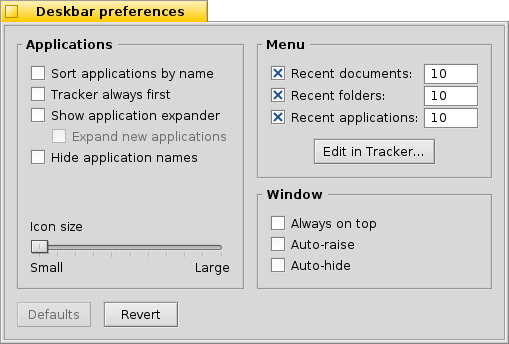

| Indice |
|
Il menu della deskbar La Tray Lista dei programmi in esecuzione |
Deskbar
La Deskbar è il piccolo pannello che si trova normalmente in alto a destra sullo schermo. La Deskbar di Haiku corrisponde alla barra delle applicazioni di Windows con il pulsante Start. Contiene il menu dal quale si possono avviare le applicazioni e gestire le varie preferenze, una tray con un orologio ed altri strumenti come una lista dei programmi in esecuzione.

Puoi spostare la Deskbar in ogni angolo dello schermo oppure ad occupare l'intero bordo superiore o inferiore inferiore trascinando con il mouse sulla zona a puntini a lato della tray e trascinandola nella nuova posizione
Può essere anche modificata con un layout più compatto trascinando la zona a puntini sulla "foglia" del menu della Deskbar. Avendo la stessa altezza della tab del titolo di una normale finestra di applicazione, anche se le finestre prendono tutto lo schermo non potranno mai oscurare la tray della Deskbar, le sue icone, l'orologio, ecc.
Trascinando l'area con i puntini sul lato sinistro della tray, puoi modificare la larghezza della Deskbar, ingrandendola o rimpicciolendola.

Una Deskbar più larga consente di avere più icone nella tray disposte su di un'unica riga. È, inoltre, meno probabile che i nomi delle applicazioni siano troncati, soprattutto se usi icone molto grandi.
 Il menu della Deskbar
Il menu della Deskbar
Cliccando nella parte alta della deskbar si apre un menu:

Informazioni sul sistema... - Mostra alcune informazioni di base sul sistema le licenze e i crediti del progetto Haiku.
Trova... - Apre la finestra che permette di effettuare le Query.
Mostra i replicanti - Mostra e nasconde il piccolo widget Replicant che si utilizza per rimuovere o accedere al menu contestuale.
Monta - Offre le stesse opzioni di quando si clicca con il tasto destro sul desktop (consultare la pagina Montaggio Volumi).
Preferenze della deskbar... - Apre il pannello per configurare la deskbar (per maggiori informazioni consultare sotto).
Arresto - E' presente sia l'opzione per che per .
Documenti, Cartelle e Applicazioni recenti - Una lista delle ultime cartelle, documenti e applicazioni aperte (per maggiori informazioni consultare sotto alle ).
Applicazioni, Demo, Deskbar Applet e Preferenze - Una lista delle applicazioni installate, le demo, gli applet e i pannelli di preferenze.
Puoi aggiungere collegamenti ad altre applicazioni (o cartelle, documenti, interrogazioni, ecc.) creandoli sul percorso ~/config/settings/deskbar/menu/.
Preferenze della Deskbar

Il pannello di preferenze della Deskbar si divide in tre sezioni.
Applicazioni
Queste impostazioni non hanno un impatto sulle applicazioni installate, ma sul comportamento e sull'aspetto della lista delle applicazioni in esecuzione.
| Disponi la lista delle applicazioni in esecuzione in ordine alfabetico. | ||
| Sebbene l'ordine sia alfabetico, il Tracker occuperà sempre la prima posizione della lista. | ||
| Rende disponibile un piccolo elemento per mostrare/nascondere tutte le finestre di un'applicazione direttamente tramite la sua voce nella Deskbar. | ||
| Le applicazioni appena lanciare avranno le loro finestre automaticamente disposte sotto la corrispettiva voce nella Deskbar. | ||
| Rimuovi le etichette di testo dalla lista delle applicazioni in esecuzione. | ||
| Modifica la dimensione delle icone della lista delle applicazioni in esecuzione. |
Menu
While the first couple of menu items of the Deskbar are fixed, you can customized the ones below .
Here you can set the number of recent documents, folders and applications that are shown in their menu in the Deskbar, or if you want to see them at all.
The button opens the folder ~/config/settings/deskbar/menu/. In it you'll find the files and folders that appear in the Deskbar, by default these are , , , and .
You can delete or add entries like links to applications, documents or even queries by simply copying/deleting them to/from this folder.
Programs installed from a package automatically put an entry into the Deskbar. Depending on the number of packages you have installed, this can become a bit crowded. If you prefer to have total control, and only want to see applications you link there yourself (possibly in categorizing sub-folders), here's how to do it:
You create a link of the menu folder in ~/config/settings/deskbar/ and rename to menu_entries. From Terminal that is achieved with:
ln -s ~/config/settings/deskbar/menu ~/config/settings/deskbar/menu_entries
Window
Finally, the preferences for the Deskbar window.
| The Deskbar always stays above all other windows. | ||
| The Deskbar pops to the front when the mouse pointer touches where the Deskbar meets the screen edge, and is lowered when it leaves the Deskbar area. | ||
| The Deskbar is reduced to only a few pixels and only pops up if the mouse pointer touches them. |
La Tray

Oltre a tutto il resto, nella tray è presente anche l'orologio. Posizionando il puntatore del mouse al di sopra di esso viene visualizzata la data in un avviso. Cliccandoci con il tasto sinistro del mouse viene mostrato un calendario. Con il tasto destro del mouse, invece, viene mostrato/nascosto l'orologio ed è possibile impostare le preferenze dell'Orario.
Per qualsiasi programma è possibile installare un' icona nella tray per fornire un interfaccia all'utente. Il sistema di e-mail, ad esempio, cambia simbolo quando ci sono mail non lette e offre un menu contestuale per creare o controllare le nuove mail. Gestione Processi è un altro esempio di applicazione che utilizza la sua icona nella barra delle applicazioni per fornire delle informazioni (CPU/utlizzo di memoria) ed un menu contestuale.
Lista dei programmi in esecuzione

You can change to a specific running application by clicking on its entry in the Deskbar and choosing (one of) its windows from the submenu. By right-clicking you can windows or and with them the entire application.
A SHIFT CTRL click on an application hides all its windows, a CTRL click shows them again.
When using the "expander" setting to show all windows of an application, you can middle-click on a window or app to start a new instance. For example, middle-clicking a running StyledEdit will open a new document window.
Maybe more useful: while holding SHIFT, a middle-click on a window closes it. Handy when you'd like to close some of many open Tracker windows, for example.
Attivando l'espansione nelle impostazioni della Deskbar, è possibile espandere o comprimere l'elenco delle finestre direttamente sotto la voce di un'applicazione.
Di fronte alla finestra di ogni applicazione c'è un simbolo che fornisce informazioni sul suo stato. Un simbolo luminoso significa che la finestra è visibile, un simbolo scuro che è ridotta al minimo. Tre linee di fronte a un simbolo indicano che non è l'attuale area di lavoro.